Kudoyama, Wakayama: things to do, food and stays
Kudoyama · Wakayama
Kudoyama
Highlighted on the Wakayama map.
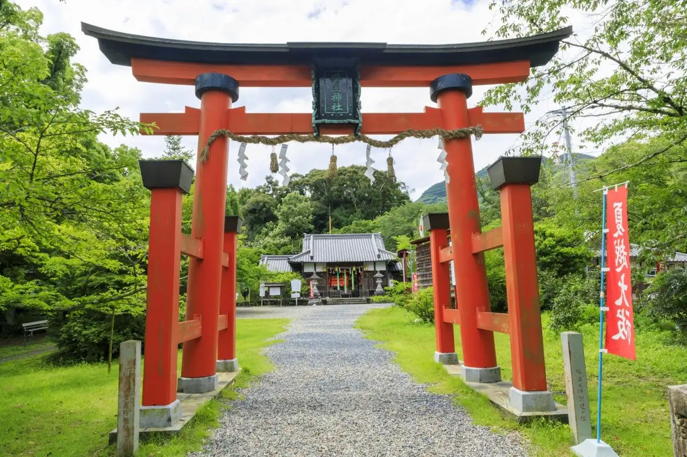
Stay
The Railway Hotel 高野山 参詣鉄道 （旧）NIPPONIA HOTEL 高野山 参詣鉄道
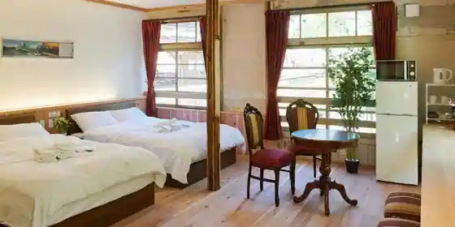
The Railway Hotel Koyasan Sankei Tetsudo (Kyu) NIPPONIA HOTEL Koyasan Sankei Tetsudo
中川旅館
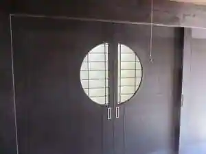
Nakagawa Ryokan
くどやま旅館 玉川亭
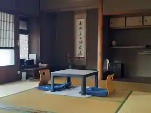
Kudoyama Ryokan Tamagawa Tei
The Railway Hotel 高野山 参詣鉄道
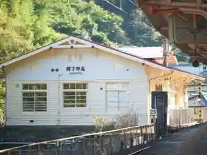
The Railway Hotel Koyasan Sankei Tetsudo
Dining
幸村庵
Yukimura Iori
おむすびスタンド くど
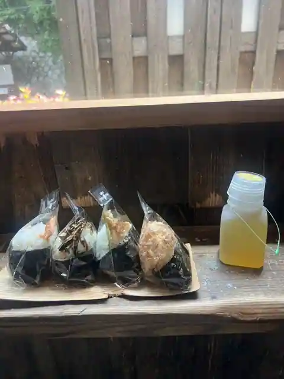
Omusubi Sutando Kudo
九和楽
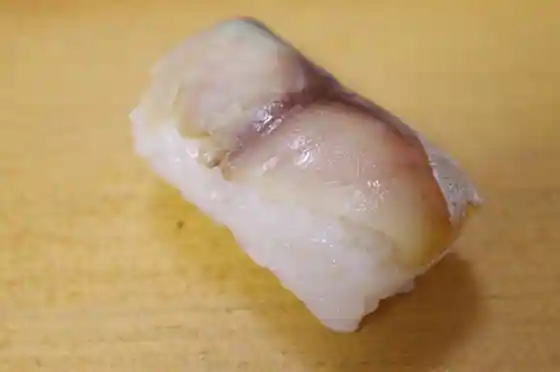
Kyu Wagaku
グラタンカフェ
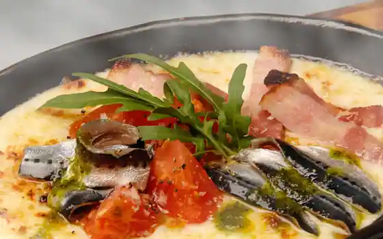
Guratan Cafe
ベーカリーカフェ パーシモン
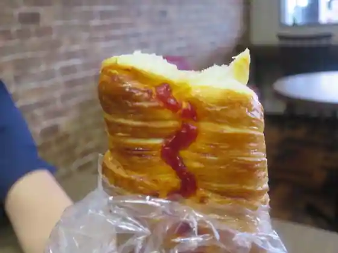
Bakery Cafe Pashimon
道の駅 柿の郷くどやま
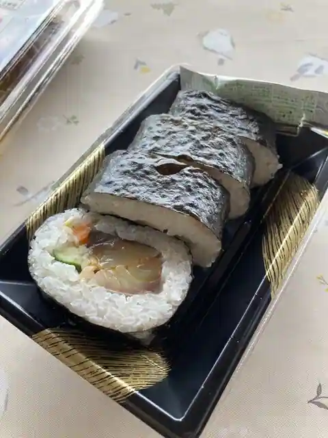
Michi No Eki Kaki No Sato Kudoyama
Vent Orange
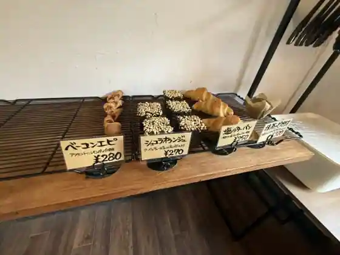
Vent Orange
げんじろうの昼ごはん
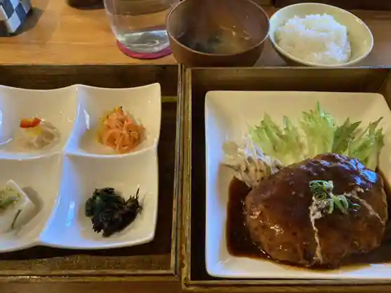
Genjirono Hiru Gohan
谷本萬寿堂
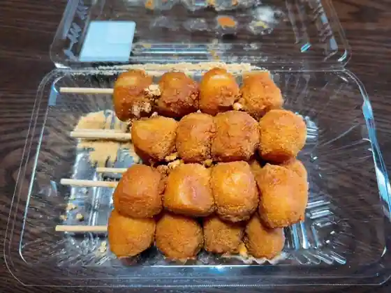
Tanimoto Manju Do
かじかドライブイン
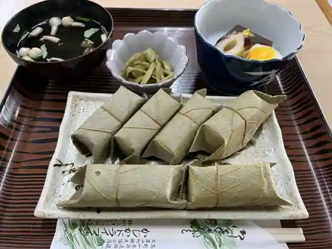
Kajika Doraibuin
Mieux
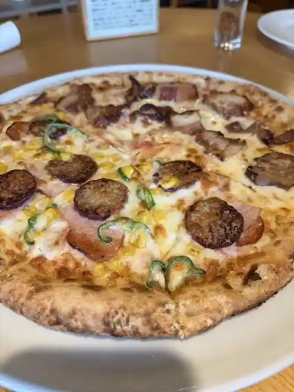
Mieux
オールドストリーム
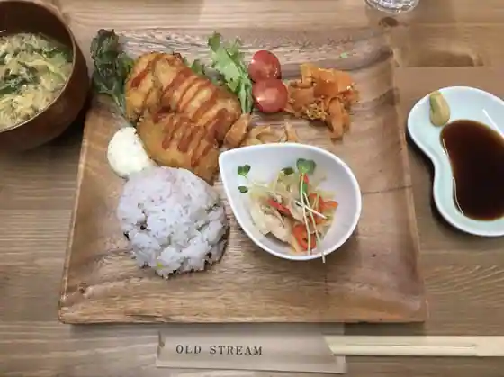
Orudosutorimu
九度山レコードカフェ龍王
Kudoyama Rekodo Cafe Ryuo
キルトカフェ 毬
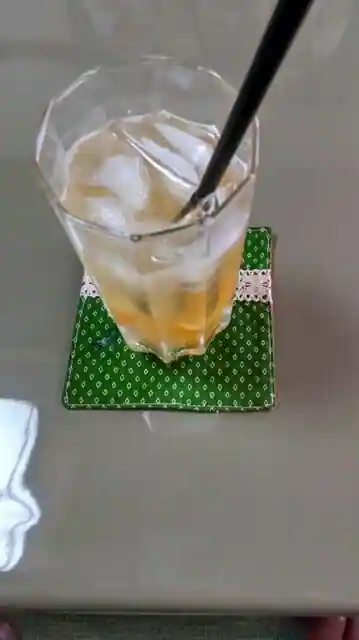
Kiruto Cafe Mari
緑や
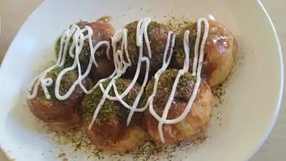
Midori Ya
九度山ばうむ
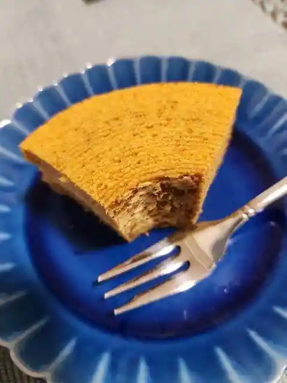
Kudoyama Baumu
真田いこい茶屋
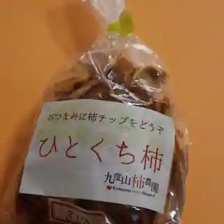
Sanada Ikoi Chaya
わかや
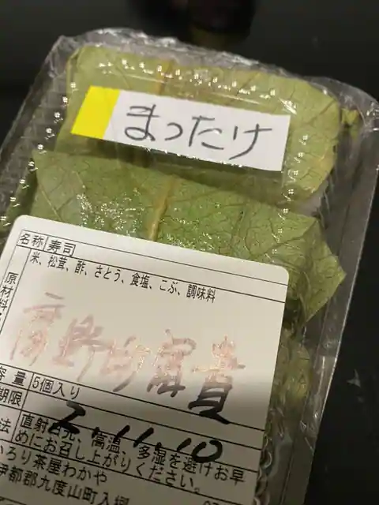
Wakaya
Sights
Ji Mikoto In
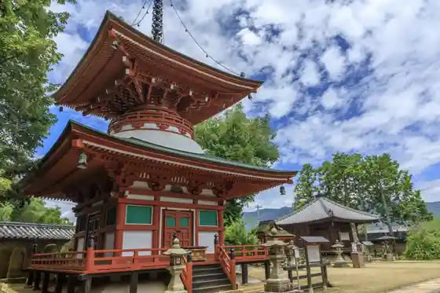
Roadside Station Kaki no Sato Kudoyama
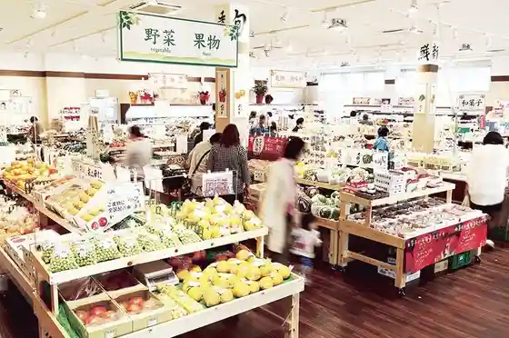
Sanada Iori
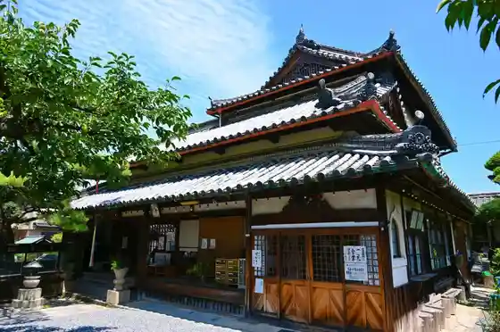
Kudoyama Sanada Museum
Ryuo Kei
Kudoyama Mori no Dowa Kan
Tanjo Kan Sho Fu Shrine
Takano Sankei Michi Town Sekido Lookout
Shori Tera Kami Yu En
Matsuyama Tsunejiro Memorial Museum
Kyu Kayano Ie (Oishi Jun Kyo Ama no Memorial Museum)